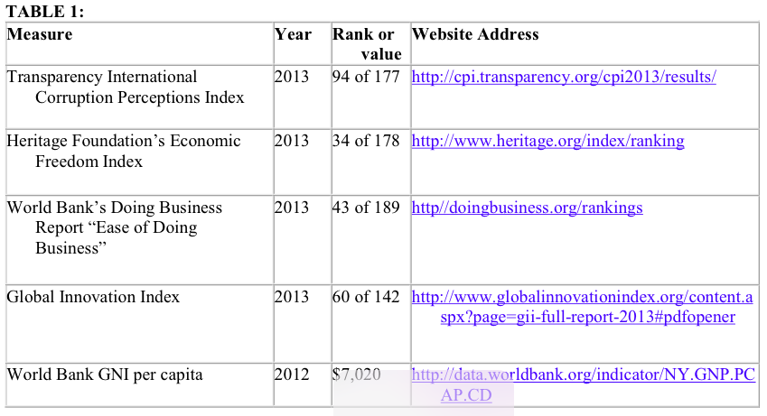

Chapter 6: Investment Climate
With increased security, a market of 47 million people, an abundance of natural resources, and an educated and growing middle-class, the Colombian government has opened the country up to global trade and investment. Colombia in 2013 had the fourth largest GDP in Latin America after Brazil, Mexico, and Argentina, and has sustained an average growth rate over four percent for the past decade. The World Bank’s 2014 “Doing Business Report” ranked Colombia 43 out of 189 for ease of doing business and recognized Colombia for best practices in protecting investors, paying taxes, and improving trade across borders. However, the survey also noted Colombia’s high transportation costs and deficiencies in enforcing contracts.
Colombia’s legal and regulatory systems are generally transparent and consistent with international norms. Colombia has a comprehensive legal framework for business and foreign direct investment (FDI), and the U.S.-Colombia Trade Promotion Agreement (FTA) that took effect on May 15, 2012, has strengthened trade and investment between our countries. Through the FTA and several international conventions and treaties, Colombia’s dispute settlement mechanisms and intellectual property rights protection are stronger than ever. Nevertheless, pirated and falsified products continue to be a major problem, which dictates that Colombia remains on the U.S. Trade Representative’s Special 301 “Watch List.”
The Colombian government has demonstrated great political will to develop efficient capital markets, attract investment, and create jobs. Sound fiscal and macroeconomic management has allowed Colombia to claim the triple crown of seeing its credit ratings increased to ‘Investment Grade’ level by Standard and Poor’s, Moody’s, and Fitch Ratings. Market capitalization as of December 2013 was US$215 billion. Although
restrictions to foreign ownership in specific sectors still exist, Colombia received a record US$16.8 billion in FDI in 2013. Colombia has aggressively pursued foreign investment in key sectors, such as infrastructure. For the first time in many years, Colombia’s average annual unemployment rate was under ten percent in 2013. Forty-nine percent of the workforce still works in the informal economy, but Colombia has abundant unskilled and semi-skilled labor throughout the country as well as managerial-level employees who are often bilingual.
Security in Colombia has improved significantly in the past 15 years, with the number of kidnappings down by 86 percent since 2003, and the number of homicides falling by 35 percent in the same period. Since November 2012, the Colombian government and the Revolutionary Armed Forces of Colombia (FARC) have been conducting peace negotiations in Havana, Cuba. Even so, an active domestic insurgency is still ongoing, posing a threat to commercial activity and investment, especially in rural zones where government control is weaker. Corruption is also a significant challenge in Colombia. According to the World Economic Forum’s Global Competitiveness Index (2013-2014), corruption is the biggest problem for doing business in Colombia. The Colombian government continues to work on improving its business climate. The three largest majority state-owned enterprises, Ecopetrol, ISA, and ISAGEN, are considered models of professional management, competition, and excellent corporate governance. Through its numerous investment treaties, free trade agreements, and progress towards accession into the Organization for Economic Cooperation and Development, Colombia has shown it is eager to increase international trade and investment.
Openness to Foreign Investment
Attitude Toward FDI
The Colombian government actively encourages foreign direct investment (FDI). In the early 1990s, the country began economic liberalization reforms, which provided for national treatment of foreign investors, lifted controls on remittance of profits and capital, and allowed foreign investment in most sectors. Generally, foreign investors may participate in privatization of state-owned enterprises without restrictions. Colombia imposes the same investment restrictions on foreign investors that it does on national investors. All FDI involving the establishment of a commercial presence in Colombia requires registration with the Superintendency of Corporations ('Super Sociedades') and the local chamber of commerce. All conditions being equal during tender processes, national offers are preferred over foreign ones. Assuming equal conditions among foreign bidders, those with major Colombian national workforce resources, significant national capital, and /or better conditions to facilitate technology transfers are preferred.
Other Investment Policy Reviews
The Organization for Economic Cooperation and Development (OECD) reviewed Colombia’s investment policy in April 2012 (http://www.oecd.org/countries/colombia/colombia-investmentpolicyreview-oecd.htm ) in anticipation of making Colombia an offer to start the OECD accession process. The OECD found that Colombia made significant progress in promoting investment liberalization and improving its investment climate through important policy reforms. The World Trade Organization (WTO) conducted a fourth trade policy review of Colombia in June 2012 ( http://www.wto.org/english/tratop_e/tpr _e/tp365_e.htm), its first in six years. It found that Colombia continued its trade policy of increased openness and emphasized greater integration with Latin America, the Caribbean, and the rest of the world by
negotiating preferential agreements to increase external trade and foreign investment flows. Colombia scored 75 percent out of a hundred, or a “C,” for investor protection according to the World Bank’s 2014 Doing Business Report.

Laws/Regulations of FDI
Colombia has a comprehensive legal framework for business and FDI. Colombia’s judicial system defines the legal rights of commercial entities, reviews regulatory enforcement procedures, and adjudicates contract disputes in the business community. The judicial framework includes the Superintendency of Industry and Commerce, the Council of State, the Constitutional Court, the Supreme Court of Justice, and the various departmental and district courts, which are also overseen for administrative matters by the Superior Judicial Council. The 1991 Constitution provided the judiciary with greater administrative and financial independence from the executive branch. However, except for the Superintendency of Industry and Commerce’s efficient exercise of judicial functions, the judicial system in general remains hampered by time-consuming bureaucratic requirements and corruption. Colombia’s foreign direct investment legal framework also incorporates binding norms resulting from its membership in the Andean Community of Nations as well as other free trade agreements and bilateral investment treaties.
The U.S.-Colombia Trade Promotion Agreement (CTPA) entered into force on May 15, 2012. The CTPA improves legal security and the investment environment while eliminating tariffs and other barriers in goods and services traded between the United States and Colombia. The agreement grants investors the right to establish, acquire, and operate investments on an equal footing with local investors as well as investors of other countries with bilateral investment treaties or investment chapters in free trade agreements with Colombia. It also provides U.S. investors in Colombia protections that foreign investors have under the U.S. legal system, including due process and the right to receive fair market value for property in the event of an expropriation.
Limits on Foreign Control
Foreign investment in the financial, hydrocarbon, and mining sectors is subject to special regimes, such as investment registration and concession agreements with the Colombian government, but are not restricted in the amount of foreign capital permitted. The following sectors require that foreign investors have a legal local representative and/or commercial presence in Colombia: travel and tourism agency services; money order operator; customs brokerage; postal and courier services; merchandise warehousing; merchandise transportation under customs control; international cargo agents; public service companies including sewage and water works, waste disposal, electricity, gas and fuel distribution, and public telephone service; insurance firms; legal services; and special air services including aerial fire-fighting, sightseeing, and surveying.
Foreign investors face specific exceptions and restrictions in the following sectors:
Media: Only Colombian nationals or legally constituted entities may provide radio or subscription-based television services. For National Open Television and Nationwide Private Television Operators, only Colombian nationals or legal entities may be granted concessions to provide television services. Colombia’s national, regional, and municipal open-television channels must be provided at no extra cost to subscribers. Foreign investment in national television is limited to a maximum of 40 percent ownership of the relevant operator. Satellite television service providers are only obliged to include within their basic programming the broadcast of government-designated public interest channels. Newspapers published in Colombia covering domestic politics must be directed and managed by Colombian nationals.
Accounting, Auditing, and Data Processing: In order to practice in Colombia, providers of accounting services must register with the Central Accountants Board; have uninterrupted domicile in Colombia for at least three years prior to registry; and provide proof of accounting experience in Colombia of at least one year. No restrictions apply to services offered by consulting firms or individuals. A legal commercial presence is required to provide data processing and information services in Colombia.
Banking: Foreign investors may own 100 percent of financial institutions in Colombia, but are required to obtain approval from the Financial Superintendent before making a direct investment of ten percent or more in any one entity. Portfolio investments used to acquire more than five percent of an entity also require authorization. Foreign banks must establish a local commercial presence and comply with the same capital and other requirements as local financial institutions. Foreign banks may establish a subsidiary or office in Colombia, but not a branch. Every investment of foreign capital in portfolios must be through a Colombian administrator company, including brokerage firms, trust companies, and investment management companies. All foreign investments must be registered with the Central Bank.
Fishing: A foreign vessel may engage in fishing and related activities in Colombian territorial waters only through association with a Colombian company holding a valid fishing permit. If a ship’s flag corresponds to a country with which Colombia has a complementary bilateral agreement, this agreement shall determine whether the
association requirement applies. The costs of fishing permits are greater for foreign flag vessels.
Private Security and Surveillance Companies: Companies constituted with foreign capital prior to February 11, 1994, cannot increase the share of foreign capital. Those constituted after that date can only have Colombian nationals as shareholders.
Telecommunications: Barriers to entry in telecommunications services include high license fees ($150 million for a long distance license), commercial presence requirements, and economic needs tests. While Colombia allows 100 percent foreign ownership of telecommunication providers, in WTO negotiations it specifically prohibited “callback” services.
Transportation: Foreign companies can only provide multimodal freight services within or from Colombian territory if they have a domiciled agent or representative legally responsible for its activities in Colombia. International cabotage companies can provide cabotage services (i.e. between two points within Colombia) “only when there is no national capacity to provide the service” according to Colombian law. Colombia prohibits foreign ownership of commercial ships licensed in Colombia and restricts foreign ownership in national airlines or shipping companies to 40 percent. FDI in maritime is limited to 30 percent. The owners of a concession providing port services must be legally constituted in Colombia and only Colombian ships may provide port services within Colombian maritime jurisdiction; however, vessels with foreign flags may provide those services if there are no Colombian-flag vessels capable of doing so.
Privatization Program
Colombia has privatized state-owned enterprises under article 60 of the Constitution and Law No. 226 of 1995. This Law stipulates that the sale of government holdings in an enterprise should be offered to two groups: first to cooperatives and workers associations of the enterprise, then to the general public. During the first phase, special terms and credits have to be granted, and in the second phase, foreign investors may participate along with the general public. Colombia’s main privatizations have been in the electricity, mining, hydrocarbons, and financial sectors. The government has attached a high priority to stimulating private sector investment in roads, ports, electricity, and gas infrastructure concessions. The government is increasingly utilizing public-private partnerships (PPPs) as the favored option for infrastructure development.
The Colombian government is engaged in its fourth generation infrastructure program focused on highway construction with PPP opportunities valued at more than $24 billion. In order to attract investment and promote PPPs, on November 22, 2013, the Colombian government signed a new infrastructure law clarifying provisions for frequently cited obstacles to participate in PPPs including environmental licensing, land acquisition, and the displacement of public utilities. The new law puts in place a civil procedure that facilitates land expropriation during court cases, allows for expedited environmental licensing, and clarifies that the cost to move or replace public utilities affected by infrastructure projects falls to private companies.
Municipal enterprises operate many public utilities and infrastructure services. These municipal enterprises have engaged private sector investment through concessions. There are several successful concessions involving roads. During 2014, the Colombian
government expects to sell one of its majority state-owned power generation companies, ISAGEN, for approximately $2.5 billion. The proceeds from this sale will be used to fund part of the fourth generation infrastructure program. These kinds of partnerships have helped promote reforms and create an attractive environment for private national and foreign investment.
Investment Trends
Since 2010, the Santos administration has continued efforts to open up the economy. Liberalization has progressed furthest in telecommunications, accounting/auditing, energy, mining, and tourism, and to a lesser extent in legal services, insurance, distribution services, advertising, and data processing. Colombia received a record $16.8 billion in FDI in 2013, an increase of seven percent compared to 2012. It ranked as the fourth FDI destination in Latin America after Brazil, Mexico, and Chile.
Colombia’s exports promotion agency, Proexport, has an official website to promote investment in Colombia (http://www.investincolombia.com.co/). It gathers investment climate information by sector and region and offers free services to new and established investors such as tailored information requests, public and private sector contacts, and suggestions for in-country visits/agendas. Proexport’s investment booklet provides detailed information about the business environment, including the labor market, legal considerations, exchange rate regime, free trade zones, environmental licensing, and private equity fund opportunities (http://www.investincolombia.com.co/publications.html).
Conversion and Transfer Policies
Foreign Exchange and Remittance Policies
No restrictions apply to transferring funds associated with FDI. However, foreign investment into Colombia must be registered with the Central Bank to secure the right to repatriate capital and profits. Except for special exceptions, direct and portfolio investments are considered registered when the exchange declaration for operations channeled through the official exchange market is presented. Colombia does not manipulate its currency to gain competitive advantages.
If investments are registered, repatriation is permitted without any limits. The government permits full remittance of all net profits regardless of the type or amount of investment. Foreign investments must be channeled through the foreign exchange market and registered within one year with the Central Bank’s foreign exchange office to be able to repatriate or reinvest the proceeds. There are no restrictions on the repatriation of revenues generated from the sale or closure of a business, reduction of investment, or transfer of a portfolio. Colombian law authorizes the government to restrict remittances in the event that international reserves fall below three months’ worth of imports, and reserves have been well above that level for decades.
Expropriation and Compensation
Article 58 of the Constitution governs indemnifications and expropriations and guarantees owners’ rights for legally-acquired property. For assets taken by eminent
domain, Colombian law provides a right of appeal both on the basis of the decision itself and on the level of compensation. The Constitution does not specify how to proceed in compensation cases, which remains a concern for foreign investors. The Colombian government has sought to resolve such concerns through the negotiation of bilateral investment treaties and strong investment chapters in free trade agreements, such as the FTA.
Dispute Settlement
Legal System, Specialized Courts, Judicial Independence, Judgments of Foreign Courts
The judicial system generally operates without government interference. It is procedurally and substantively fair and reliable, though competency can vary depending on the basic substantive knowledge of judges. In 2012, Law 1564 gave the Superintendency of Industry and Commerce, National Copyrights Directorate, and Colombian Agriculture Institute authority to judge civil commercial cases about intellectual property rights (IPR).
Bankruptcy
Colombia’s 1991 Constitution grants the Colombian government the authority to intervene directly in financial or economic affairs, and this authority provided solutions similar to U.S. Chapter 11 filings for companies facing liquidation or bankruptcy. Colombia’s bankruptcy regulations have two major objectives: to regulate proceedings to ensure creditors’ protection and monitor the efficient recovery and preservation of still-viable companies. This was revised in 2006 to allow creditors to request judicial liquidation, which replaces the previous forced auctioning option. Now, inventories are valued, creditors’ rights are taken into account, and either a direct sale takes place within two months or all assets are assigned to creditors based on their share of the company’s liabilities. The insolvency regime for companies was again revised in 2010 to make proceedings more agile and flexible and allow debtors to enter into a long-term payment agreement with creditors, giving the company a chance to recover and continue operating. Bankruptcy is not criminalized in Colombia.
Restructuring proceedings aim to protect the debtors from bankruptcy. Once reorganization has begun, creditors cannot use collection proceedings to collect on debts owed prior to the beginning of the reorganization proceedings. All existing creditors at the moment of the reorganization are recognized during the proceedings if they present their credit. Foreign creditors, equity shareholders including foreign equity shareholders, and holders of other financial contracts, including foreign contract holders, are recognized during the proceeding. Established creditors are guaranteed a vote in the final decision.
Investment Disputes
There is one pending investment dispute currently in litigation since 1999 involving a U.S. fast food company. The company purchased land to build a restaurant, and after the restaurant was in operation the Colombian courts seized the land. The government seized the property during an investigation of the prior landholder for drug trafficking and money laundering under the assumption that it was acquired using drug money.
International Arbitration, ICSID Convention, and New York Convention
Foreign judgments are recognized and enforced in Colombia through an application submitted to the Civil Chamber of the Supreme Court. The arbitration process in Colombia was improved in 2012 when new legislation based on the UNCITRAL Model Law was adopted. The new statute stipulates that awards be governed by not only the new law but also international conventions (New York Convention, Panama Convention, etc.), which has made the process easier for the parties involved. Arbitration in Colombia is completely independent from judiciary proceedings, and once arbitration has begun, the only competent authority is the arbitration tribunal itself. The CTPA protects U.S. investments by requiring a transparent and binding international arbitration mechanism and allowing investor -state arbitration for breaches of investment agreements if certain parameters are met.
The law permits contracting parties to agree to submit disputes to international arbitration, provided that the parties are domiciled in different countries, the place of arbitration agreed to by the parties is a country other than the one where they are domiciled, the subject matter of the arbitration involves the interests of more than one country, and the dispute has a direct impact on international trade. The law lets parties set their own arbitration terms including location, procedures, and the nationality of rules and arbiters. International arbitration is not allowed for the settlement of investor-state disputes arising from legal stability contracts, even for foreign investors. Foreign investors have found the arbitration process in Colombia complex and dilatory, especially with regard to enforcing awards. In October 2012, the new National and International Arbitration Statute, modeled after the United Nations Commission on International Trade Law, took effect. Colombia is a member of the New York Convention on Investment Disputes, the International Center for the Settlement of Investment Disputes, and the Multilateral Investment Guarantee Agency.
Duration of Dispute Resolution
Domestic commercial litigation takes on average 885 days from the pretrial stage until the final hearing and judgment. Traditionally, most court proceedings are carried out in writing and only the evidence-gathering stage is carried out through hearings, including witness depositions, site inspections, and cross-examinations. The Colombian government has accelerated proceedings and reduced the backlog of court cases by allowing more verbal public hearings and creating alternative court mechanisms. The new Code of General Procedure that will enter in force in June 2014 also establishes an oral proceeding which is carried out in two hearings, and there are now penalties for not ruling in the time limit set by the law. Enforcement of an arbitral award can take up to two years.
Performance Requirements and Incentives
According to the Constitution and foreign investment regulations, foreign investment in Colombia receives the same treatment as an investment made by Colombian nationals. Any investment made by a person that does not qualify as a resident of Colombia for foreign exchange purposes will qualify as foreign investment. Foreign investment is permitted in all sectors, except in activities related to defense, national security, and
toxic waste handling and disposal. There are no performance requirements explicitly applicable to the entry and establishment of foreign investment in Colombia. However, there are export incentives relating to the operation of free trade zones.
WTO/TRIMS
There are no active measures inconsistent with WTO’s Trade Related Investment Measures (TRIMs) requirements. The latest notification under Article 5.1 of the TRIMs agreement was resolved in 2004 through Decree 1473 which eliminated import control mechanisms for certain agricultural products.
Investment Incentives
The Colombian government offers investment incentives such as income tax exemptions and deductions in specific priority sectors. During the last decade it has committed to providing more incentives and stability for investors. Investment incentives through free trade agreements between Colombia and other nations include national treatment and most favored nation treatment of investors; establishment of liability standards assumed by countries regarding the other nation’s investors including the minimum standard of treatment and establishment of rules for investor compensation because of expropriation; establishment of rules for transfer of capital relating to investment; and specific tax treatment.
The government offers tax incentives to all investors, such as preferential import tariffs, tax exemptions, and credit or risk capital. Some fiscal incentives are available for investments that generate new employment or production in areas impacted by natural disasters, and companies can apply for these directly with participating agencies. Tax and fiscal incentives are often based on regional considerations. Border areas have special protections due to currency fluctuations in neighboring countries, which can harm local economies. National and local governments also offer special incentives, like tax holidays, to attract specific industries.
One of Colombia’s most important tax incentives for any investor is the 30 percent deduction of the value of productive fixed-asset investment when paying income tax. This deduction is in addition to regular depreciation. It applies to any investment in tangible goods incorporated as part of a company’s fixed assets that are depreciable and part of the company’s income-producing activity.
Special tax exemptions have existed since 2003 and range between ten to thirty years. Income tax exemptions in tourism cover new hotels constructed between 2003 and December 31, 2017, and remodeled and/or expanded hotels until December 31, 2017, for a period of 30 years, and for ecotourism services through 2023. New forestry plantations and sawmills also benefit from income tax exemptions since 2003. Late yield crops planted through December 31, 2014, are tax exempt for ten years from the beginning of the harvesting. Electricity from wind power, biomass, and agricultural waste are tax exempt until January 1, 2018, as are river based transportation services provided with certain shallow draft vessels and barges. Certain printing and publishing companies can benefit from tax exemptions until December 31, 2033.
Research and Development (R&D)
Foreign investors can participate without discrimination in government-subsidized research programs. In fact, most Colombian government research has been conducted with foreign institutions. R&D incentives include Value-Added Tax exemptions for imported equipment or materials used in scientific, technology, or innovation projects, and qualified investments may receive tax credits up to 175 percent. A 2012 reform of Colombia’s royalty system allocates ten percent of the government’s revenue towards science, technology, and innovation proposals executed by subnational governments. Although only subnational governments can submit a project, anyone, including foreigners, can partner with them. Colombia’s government R&D funding increased 40 percent to $840 million from 2012 to 2014.
Performance Requirements
There are no performance requirements imposed on foreigners as a condition for establishing, maintaining or expanding investments. The Colombian government does not have performance requirements, impose local employment requirements, or require excessively difficult visa, residence, and work permit requirements for investors. Under the FTA, Colombia grants substantial market access across its entire services sector.
Right to Private Ownership and Establishment
The 1991 Constitution explicitly protects individual rights against state actions and upholds the right to private property.
Protection of Property Rights
Colombia has effective means for enforcing property and contractual rights through judicial proceedings.
Real Property
Secured interests in real property, and to a lesser degree movable property, are recognized and generally enforced after the property is properly registered. In terms of protecting third party purchasers, such as in the case cited under investment disputes, existing law is inadequate. The concept of a mortgage, trust deed, and other types of liens exists, as well as a reliable system of recording such secured interests. Deeds, however, have some legal risk due to the prevalence of transactions that have never been registered with the Public Instruments Registry. About 48 percent of rural land in Colombia, or about 1.7 million plots, does not have a clear title. The Colombian government is working to title these plots and has started a pilot formalization program for land restitution. Colombia scored 83 percent out of a hundred, or a “B,” for the ease of registering property according to the World Bank’s 2014 Doing Business Report.
Intellectual Property Rights
In Colombia, the grant, registration, and administration of intellectual property rights are carried out by four different government entities. The Superintendency of Industry and Commerce acts as the Colombian patent and trademark office. The Colombian Agricultural Institute is in charge of issuing plant variety protections and data protections for agricultural products. The Ministry of Interior administers copyrights through the National Copyright Directorate. The Ministry of Health and Social Protection handles
data protection for products registered through the National Food and Drug Institute. Each of these entities experiences significant financial and technical resource constraints. Colombia is subject to Andean Community Decision 486 on trade secret protection, which is fully implemented domestically by the Unfair Competition Law of 1996.
The patent regime in Colombia currently provides for a 20-year protection period for patents, a 10-year term for industrial designs, and 20 or 15-year protection for new plant varieties, depending on the species. However, U.S. companies have expressed concern that the Colombian government does not provide patent protection for new uses of previously known or patented products. The U.S. Patent and Trademark Office partnered with the Superintendency of Industry and Commerce to establish a Patent Prosecution Highway (PPH) pilot program. The PPH allows for the mutual recognition of patent examination procedures making the patent granting process faster. The pilot program originally ended in August 2013, but was extended indefinitely due to its success.
Colombia has been on the U.S. Trade Representative’s Special 301 “Watch List” every year since 1991 and is also listed in the notorious markets report. Both reports can be found at http://www.ustr.gov/about-us/press-office/reports-and-publications/2014. The FTA improved standards for the protection and enforcement of a broad range of intellectual property rights. Such improvements include state-of-the-art protections for digital products such as software, music, text, and videos; stronger protection for U.S. patents, trademarks and test data; and prevention of piracy and counterfeiting by criminalizing end-use piracy. Colombia is a member of the Inter -American Convention for Trademark and Commercial Protection. Various procedures associated with industrial property, patent, and trademark registration are available at http://www.sic.gov.co/es/web/guest/propiedad-industrial. In August 2012, Colombia joined the Madrid Agreement Concerning the International Registration of Marks (Madrid Protocol). The Colombian government joined the World Intellectual Property Organization (WIPO) Trademark Law Treaty on January 13, 2012, which entered into force on April 12, 2013. WIPO’s 1996 Copyright Treaty has been in force since March 6, 2002, and the Performances and Phonograms Treaty since May 20, 2002. Colombia is not a member of the Patent Law Treaty.
On January 23, 2013, the Constitutional Court declared that Law 1520 of 2012, which was to implement several FTA-related commitments including copyrights, TV programming quotas, and IPR enforcement measures, was unconstitutional on procedural grounds. In response, the Santos administration presented separate bills to Congress. Although the copyrights law was reintroduced, it was struck down because it was not debated by Congress before the end of the legislative period and will need to be reintroduced in 2014. A draft copyrights bill is circulating now, including with the U.S. Trade Representative, for comment prior to resubmission to Congress. The TV programming quotas bill was approved in three of four required debates and must be voted on in a final debate scheduled this year. The IPR enforcement bill was approved in July 2013; however, it does not yet include criminal penalties and a specified list of damages for copyright infringement and trademark counterfeiting – crucial parts of the commitment. The FTA deadlines for these two portions of the IPR enforcement bills were May 15 and November 15, 2013, respectively.
While Colombia has taken steps to increase penalties to better protect intellectual property rights, pirated and falsified products are a major problem and are distributed through hundreds of stalls in flea markets. In 2006, amendments to the criminal code increased the maximum prison term for copyright infringement from five to eight years, with a corresponding rise in the minimum term from two to four years. The code also contains provisions on the violation of technological protection measures and rights management, both key obligations of the WIPO Treaties. Unfortunately, these violations are only punishable by fines. Although Colombia has one of the lowest software piracy rates in Latin America, piracy of both business and entertainment software continues to cause commercial harm to legitimate industry. Even with an improved penal code, law enforcement raids have not created a deterrent effect.
Embassy point of contact:
U.S. Embassy Bogota
Economic Section
Carrera 45 #22B-45
Bogota, Colombia
(571) 275-2000
Country/Economy resources:
American Chamber of Commerce in Colombia: http://www.amchamcolombia.com.co/
Council of American Companies in Colombia: http://www.ceacolombia.com/es/
Local attorneys list: http://bogota.usembassy.gov/attorneys.html
For additional information about treaty obligations and points of contact at local IP offices, please see WIPO’s country profiles at http://www.wipo.int/directory/en/.
Transparency of Regulatory System
The Colombian legal and regulatory systems are generally transparent and consistent with international norms. The commercial code and other laws cover broad areas including banking and credit, bankruptcy/reorganization, business establishment/conduct, commercial contracts, credit, corporate organization, fiduciary obligations, insurance, industrial property, and real property law. The civil code contains provisions relating to contracts, mortgages, liens, notary functions, and registries. There are no identified private sector associations or nongovernmental organizations leading informal regulatory processes. The ministries generally consult with relevant actors, both foreign and national, when drafting regulations and proposed laws are typically published as drafts for public comment.
Enforcement mechanisms exist, but historically the judicial system has not taken an active role in adjudicating commercial cases. The 1991 Constitution provided the judiciary with greater administrative and financial independence from the executive branch. Colombia has completed its transition to an oral accusatory system to make criminal investigations and trials more efficient. The new system separates the investigative functions assigned to the Office of the Attorney General from trial functions. Lack of coordination among government entities as well as insufficient resources complicate timely resolution of cases.
Efficient Capital Markets and Portfolio Investment
Market capitalization has risen from $14 billion in 2003 to $215 billion as of December 2013. Sound fiscal and macroeconomic management allowed Colombia to claim the triple crown of seeing its credit ratings increased to ‘Investment Grade’ level by Standard and Poor’s, Moody’s, and Fitch Ratings. Foreign investors are allowed to participate in capital markets by negotiating and acquiring shares, bonds, and other securities listed by the Foreign Investment Statute. These activities must be conducted via a local administrator, which can be a trust company or a stock brokerage firm that has been authorized to do so by the Financial Superintendent (Super Financiera). Foreign investment capital funds are not allowed to acquire more than ten percent of the total amount of a Colombian company's outstanding shares. Foreigners have no restrictions to establish a bank account as long as they have a valid visa and government ID (Cedula).
The market has sufficient liquidity for investors to enter and exit sizeable positions. Following the crisis of 1998-99, bailouts for failing banks were partially financed through a controversial tax on financial transactions. The tax was originally set at 0.2 percent but has since been increased to 0.4 percent. The tax on financial transactions is applied to all withdrawals from checking and savings accounts, including accounts with the Central Bank. Savings accounts for the purchase of low-income housing, transactions on the inter-bank market, and the sale or purchase of foreign currency are exempt from the tax. Electronic securities transactions, including stock market transactions, are also exempt from the tax. The Central Bank respects IMF Article VIII and does not restrict payments and transfers for current international transactions.
Money and Banking System, Hostile Takeovers
In 2005, Colombia consolidated supervision of all aspects of the banking, financial, securities, and insurance sectors under the Financial Superintendent. Colombia has an effective regulatory system that encourages portfolio investment. According to the Financial Superintendent, as of December 2013, the estimated assets of the country’s main banks totaled approximately $184 billion. Sixty percent of all disbursed credits were destined for commercial credits, 28 percent for consumption, nine percent for housing, and three percent for microcredit. Past-due loans accounted for three percent of the total portfolio.
Colombia’s financial system is well developed by regional standards. The financial sector as a whole is investing in new risk assessment and portfolio management methodologies. Two private financial groups together own over half of all bank assets: the Sarmiento Group (Grupo Aval) controls about 27 percent and the Sindicato Antioqueño Group (Bancolombia) about 27 percent as of December 2013. Total foreign-owned bank assets account for approximately 24 percent of sector assets.
The principal source of long-term corporate and project finance in Colombia are commercial banks. Loans with a maturity in excess of five years are scarce. Unofficial private lenders play a considerable role in meeting the working capital needs of small and medium-sized companies. Only the largest of Colombia’s companies participate in
the local stock or bond markets with the majority meeting their financing needs through the banking system, by reinvesting their profits, and through suppliers’ credit.
Competition from State-Owned Enterprises (SOEs)
OECD Guidelines on Corporate Governance of SOEs
At Colombia’s request, the OECD analyzed Colombia’s corporate governance practices of State Owned Enterprises (SOEs) against OECD Guidelines and released a report in December 2013 (http://www.oecd-ilibrary.org/governance/colombian-soes-a-review-against-the-oecd-guidelines-on-corporate-governance-of-state-owned-enterprises_5k3v1ts5s4f6-en). The OECD found that Colombia’s legal framework is compatible with the OECD standards of corporate governance. Colombian SOEs fall into two broad categories: Industrial and Commercial State Companies that are statutory corporations wholly owned by the state and whose origin and norms are established by law and Mixed-Ownership in which the state has a stake and which can take any legal form and are generally governed by the norms applicable to the private sector. The central government owns 70 SOEs and partial SOEs. SOEs exist in the following sectors: defense article production, regional utility companies, postal service, electricity generation and distribution, hospitals, airports, banking, television, education, regional lotteries, alcohol and spirit distillers, and oil and gas.
In principle Colombia’s SOEs do not receive preferential treatment, though in practice some issues arise such as political authorities running SOEs and conflicts of interest. In general, Colombian SOEs are subject to the general legal framework and receive special treatment in very few areas. One of these areas is bankruptcy law; SOEs are largely protected from insolvency due to the necessity of providing essential public services. Colombian SOEs are, in general, subject to private law and structured as commercial companies. However, depending on the sector, SOEs may also be subject to specific sector norms, such as the Utilities Law.
Private enterprises generally are allowed to compete with public enterprises under the same terms and conditions, although at the sub-national level private liquor companies face licensing restrictions and other administrative barriers that prevent free competition with local SOEs. Private enterprises are allowed to compete with SOEs under the same terms and conditions with respect to access to markets, credit, and other business operations, such as licenses and supplies. State-owned banks are expected to treat SOEs without any preference. Colombian SOEs generally use the financial markets for financing and do not receive additional support from the government except in very rare cases.
Colombia’s corporate governance code is comprised of 41 best practices for shareholders’ meetings, boards of directors, disclosure of financial and non-financial information, and dispute resolution. Adoption of the code is voluntary and based on the principle of self-regulation, but Colombia requires that all companies submit an annual report on their implementation with a “comply or explain” approach. In March 2014, Santos signed a new law requiring all SOEs to make their operations publicly available. Colombia protects the rights of minority shareholders and allows any group of shareholders with less than a ten percent stake to request the intervention of the regulator if they believe the company is taking measures detrimental to their interests. According to the OECD, the three largest SOEs, Ecopetrol, ISA, and ISAGEN, are
considered to be good examples of professional management, competition, and excellent corporate governance.
Sovereign Wealth Funds
Colombia started operating a sovereign wealth fund in 2012 using royalties from the extractive industry. The fund’s main objective is to promote saving and economic stabilization in the country, but it also aims to boost productivity in Colombia through new technologies and innovation. The fund is administrated by the Central Bank.
Corporate Social Responsibility
Colombia adheres to the corporate social responsibility (CSR) principles outlined in the OECD Guidelines for Multinational Enterprises. It has a long tradition of CSR across many industries and encourages public and private enterprises to follow OECD guidelines. Beneficiaries of CSR programs include students, children, populations vulnerable to Colombia's armed conflict, victims of violence, and the environment. Larger companies, in particular, structure their CSR programs in line with generally accepted international CSR principles. On several occasions, companies in Colombia have been recognized on an international level, including by the State Department, for their CSR commitments.
Overall, Colombia has strong environmental laws on the books, is proactive at the federal level in enacting environmental protections, and does not waive labor or environmental regulations to attract investors. However, the Colombian government struggles with enforcement, particularly in more remote areas. Geography, lack of infrastructure, and lack of state presence all play a role, as does a general shortage of resources in its national and regional level institutions. The Environmental Chapter of the CTPA requires Colombia to maintain and enforce environmental laws, protect biodiversity, and promote opportunities for public participation.
Political Violence Return
Violence, including political violence, has diminished significantly in recent years. Colombian government figures show that the number of terrorist acts decreased by seven percent from 2012 to 2013 to 830 incidents. Homicides nationally continued a downward trend, with 15,234 in 2013, compared with 16,440 in 2012. The number of kidnappings in 2013 was 299, a two percent decrease from 305 in 2012, and a 91 percent decrease since 1999 when there were 3,204 kidnappings.
Security in Colombia has improved significantly in the past 15 years. However, there continues to be an active domestic insurgency that threatens commercial activity and investment, especially in rural zones where government control is weaker. The government estimates the Revolutionary Armed Forces of Colombia (FARC) insurgent group has around 8,000 armed members, and the National Liberation Army (ELN) has around 1,500. Both groups attack oil pipelines, mines, roads, and electricity towers to disrupt economic activity and put pressure on the government. Both groups also extort businesses in their area of operation, sometimes kidnapping personnel and destroying the property of operations that refuse to pay.
The extractive sector has been especially hard hit by insurgent attacks. According to press reports, there were 259 attacks on oil pipelines in 2013, a 72 percent increase compared to 2012. These attacks sometimes temporarily forced oil companies to stop production while pipelines were repaired or to transport oil by more expensive alternate methods. In October 2013, the FARC twice used explosive devices to derail a train moving coal from Cerrejon, Colombia’s largest coal mine, to a port in the northern department of La Guajira, and another attack the following month killed one soldier and wounded two others. In 2013, the FARC and ELN also kidnapped, detained, or threatened employees of some oil and gas companies with operations in proximity to Venezuela and Ecuador.
The Colombian government and FARC have been in peace negotiations in Havana, Cuba since November 2012. They have agreed in principle on two of the five negotiating topics – agriculture and rural development and political participation – and discussion on a third topic, drugs, is ongoing. The last two agenda items, victims and end of conflict, have yet to be addressed.
Corruption Return
UN Anticorruption Convention, OECD Convention on Combatting Bribery Corruption Corruption is a significant challenge in Colombia. According to the World Economic Forum’s Global Competitiveness Index (2013-2014), corruption is the biggest problem for doing business in Colombia. The Colombian Attorney General estimates that corrupt activity drains $2.1 billion per year from the country’s economy. According to the “AmericasBarometer 2013” published by the Latin American Public Opinion Project, the perception of corruption in Colombia reached 81.7 percent, its highest level since the study was first carried out in 2004. Similarly, the latest Survey of Colombian Companies’ Anti-Bribery Practices, carried out in 2012, found that 94 percent of businesspeople believed their peers offered bribes and that 58 percent of companies lacked mechanisms for reporting cases of bribery. Responders said that corruption increases the cost of projects almost 15 percent, particularly for government contracts.
President Santos has demonstrated his commitment to prosecute corrupt officials and tackle fraud and bribery in the use of public funds. In 2011, he signed the Anti-Corruption Statute, a comprehensive policy giving the government new tools to crackdown on corruption, including stiffer penalties. Santos has also uncovered multiple high-profile scandals involving the public sector since taking office, and numerous officials have been dismissed, taken to court, or put in jail. In 2013, the Customs and Tax Office (DIAN) was involved in a high-profile corruption case that is still pending in which a number of employees nationwide stole approximately $90 million.
Colombia has adopted the OECD Convention on Combating Bribery of Foreign Public Officials and is a member of the OECD Anti-Bribery Committee. It has signed and ratified the UN Anticorruption Convention. Additionally, it has adopted the OAS Convention against Corruption.
The FTA protects the integrity of procurement practices and criminalizes both offering and soliciting bribes to/from public officials. It requires both countries to make all laws, regulations, and procedures regarding any matter under the FTA publicly available.
Both countries must also establish procedures for reviews and appeals by any entities affected by actions, rulings, measures, or procedures under the FTA.
Resources to report corruption
Useful resources and contact information for those concerned about combating corruption in Colombia include the following:
The Transparency and Anti-Corruption Observatory is an interactive tool of the Colombian government aimed at promoting transparency and combating corruption available at http://www.anticorrupcion.gov.co/.
The Presidential Secretariat of Transparency advises and assists the president to formulate and design public policy about transparency and anti-corruption. This office also coordinates the implementation of anti-corruption policies. http://wsp.presidencia.gov.co/.
Gerson David Motta
Chavarro National Secretary of Transparency
Presidential Secretariat of Transparency
Carrera 8 No.7-26 Bogota, Colombia
(57 1) 562-9300
gersonmotta@presidencia.gov.co
Bilateral Investment Agreements
Colombia has nine free trade agreements that include investment chapters: the U.S., European Union, Canada, Chile, Mexico, Cuba, Andean Community of Nations (Bolivia, Ecuador, and Peru), European Free Trade Area (only Switzerland and Liechtenstein have ratified), Mercosur (Brazil, Argentina, Paraguay, Uruguay, and Venezuela), and North Triangle (El Salvador, Honduras, and Guatemala). Colombia has signed agreements with Israel, Panama, Costa Rica, and South Korea that are expected to be ratified and enter into force within the next two years. Free trade agreement negotiations with Turkey and Japan are ongoing and Colombia’s goal is to have sixteen trade agreements with over fifty countries (including the 27 EU members) by the end of 2014.
Additionally, Colombia has stand-alone bilateral investment treaties in force with China, India, Peru, Spain, and Switzerland and treaties signed but not in force with the UK and Japan. Colombia together with Chile, Mexico, and Peru form the Pacific Alliance, which signed a trade agreement in February 2014 that is expected to take effect sometime in 2015.
Bilateral Taxation Treaties
Colombia has double taxation agreements in force with Spain, Chile, Switzerland, and now Canada. It has signed agreements with India, Mexico, South Korea, and Portugal. Talks for such accords have concluded successfully with Belgium, the Czech Republic, and France. Colombia is currently negotiating double taxation agreements with Germany, the Netherlands, Japan, and the United States.
Overseas Private Investment Corporation (OPIC) and Other Investment Insurance Programs
OPIC made its first investment in Colombia in 1985 and has since made investments totaling over $2 billion in a variety of sectors. Additional information can be found at www.opic.gov.
Labor
The labor market reflected positive results in Colombia’s healthy economy. The average annual unemployment rate in 2013 was 9.6 percent, the first time in many years under ten percent. That said, Colombia has one of the highest unemployment rates in the region. About 64.5 percent of the population actively participates in the labor force. Forty-nine percent of the workforce was working in the informal economy at the end of 2013. Colombia has abundant unskilled and semi-skilled labor throughout the country, as well as managerial-level employees who are often bilingual.
Pursuant to Colombia’s Labor Law, any group of 25 or more workers, regardless of whether they are employees of the same company or not, may form a labor union. Employees of companies with fewer than 25 employees may affiliate themselves with other labor unions. About four percent of the country’s labor force is unionized. The largest and most influential unions are composed mostly of public employees, particularly of the majority state-owned oil company and the state-run education sector. The Constitution protects the right to constitute labor unions. Strikes, when held in accordance with the law, are recognized as legal instruments to obtain better working conditions. Strikes in sectors considered essential for some public sector unions are illegal. In 2013 there were a number of nationwide strikes, particularly in the agriculture sector, resulting in a few deaths and thousands of dollars in property damage.
Labor rights in Colombia are set forth in its Constitution, the Labor Code, the Procedural Code of Labor and Social Security, sector-specific legislation, and ratified international conventions, which are incorporated into national legislation. Colombia’s Constitution guarantees freedom of association and provides for collective bargaining and the right to strike (with some exceptions). It also addresses forced labor, child labor, trafficking, discrimination, protections for women and children in the workplace, minimum wages, working hours, skills training, and social security.
Colombia has ratified all eight of the International Labor Organizations’ fundamental labor conventions and all are in force, including those related to freedom of association, equal remuneration, right to organize and collectively bargain, discrimination, minimum working age, forced labor, and prohibition of the worst forms of child labor. Colombia has also ratified conventions related to hours of work, occupational health and safety, and minimum wage. In 2013, Law 1636 was passed to increase protections and opportunities for Colombia’s unemployed population. The Ministry of Labor passed a number of resolutions and regulations, covering topics such as social security, occupational safety and health standards, formalization, and labor mediation.
Foreign companies operating in Colombia must follow the same hiring rules as national companies, regardless of the origin of the employer and the place of execution of the contract.
In 2010, Law 1429 eliminated the mandatory proportion requirement for foreign and national personnel; 100 percent of the workforce, including the board of directors, can be foreign nationals. Labor permits are not required in Colombia, except for under-aged workers. Foreign employees have the same rights as Colombian employees.
Foreign-Trade Zones/Free Ports
To attract foreign investment and promote the importation of capital goods, the Colombian government uses a number of drawback and duty deferral programs. One example is free trade zones (FTZ), which the government has used to attract more investment and create more jobs. In 2005, Colombia’s Congress passed comprehensive FTZ modernization legislation that opened investment to international companies, allowed one-company/standalone FTZs, and permitted the designation of pre-existing plants as FTZs. This law was updated in 2007 to outline the requirements to be declared a FTZ. As of December 2013 there were 97 FTZs, an almost tenfold increase since 2005. FTZs account for $7.8 billion in investment and provide 47,076 direct jobs and 96,291 indirect ones. While the customs authority, DIAN, oversees requests to establish FTZs, the Colombian government is not involved in their operation.
In 2002, Colombia accepted the WTO Committee on Subsidies and Countervailing Measures’ decision to phase out all export subsidies in FTZs by December 31, 2006. However, FTZs maintain their special customs and foreign exchange regimes, per Law 1004 passed in 2005, which also grants a preferential 15 percent corporate income tax and exemption from customs duties and value-added taxes on imported materials. In January 2013, the new tax reform took effect, grandfathering benefits to existing FTZs while requiring new ones to pay an additional income tax of nine percent until 2015 and eight percent beginning in 2016. In return for these and other incentives, every FTZ project must meet specific investment and job creation commitments. Requirements range from a minimum of $17 million in new investments and 500 jobs for agro-industrial projects, to $34 million in new investment and 150 jobs created for manufacturing projects. Job creation requirements may be lowered by 15 positions for every additional $3 million invested with a minimum requirement of 50 jobs created.
Foreign Direct Investment Statistics


Contact Point at Post for Public Inquiries
U.S. Embassy Bogota
Economic Section
Carrera 45 #22B-45
Bogota, Colombia (571) 275-2000